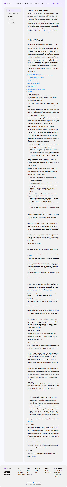

Политика конфиденциальности
privacy-policy.html
Показать утвержденную редакцию документа.
| Когда открывается | Footer / legal |
|---|---|
| Данные | Название юрлица; версия; дата; язык; текст; связанные документы. |
| Сценарий | Ссылка открывает соответствующий документ; чтение само по себе не записывает согласие. |
| Переходы | Правовые документы |
Юрлицо зарегистрировано в Гибралтаре; точное юридическое название должно быть предоставлено, не выдумано.
Общая и предметная логика. Снимки и подписи элементов — исходная редакция макета; поздние уточнения ТЗ имеют приоритет в своей области. Это не проверка текущего сайта.
Состояние 1280 · 1280 × 9238


Элементы и ожидаемые действия
| Элемент | Название в макете | Действие | Ожидаемый результат |
|---|---|---|---|
| E001 Виден | site-header__logo | Открыть адрес из исходника: ../home.html. | Сохранить авторизацию и переданный контекст. Backend-only маршрут связывает Игорь; открытие не выполняет денежное действие. |
| E002 Скрыт в этом состоянии | Open menu | Открыть/закрыть соответствующее меню или панель. | Доступные пункты зависят от роли; Escape/Close возвращают фокус. Открытие меню не выполняет его команды. |
| E003 Скрыт в этом состоянии | Language selector | Выбрать доступный язык интерфейса. | Сохранить текущий маршрут и сущность; язык не означает автоматический допуск страны или перевод чужой переписки. |
| E004 Скрыт в этом состоянии | Открыть адрес из исходника: ../home.html. | Сохранить авторизацию и переданный контекст. Backend-only маршрут связывает Игорь; открытие не выполняет денежное действие. | |
| E005 Скрыт в этом состоянии | Close menu | Закрыть локальное окно или вернуться к инициатору; Stay отменяет намерение завершить. | Вернуть фокус и исходный контекст. Не выполнять оплату, удаление или Complete. При неизвестном результате платежа сначала сверить заказ. |
| E006 Виден | Psychic Reading | Открыть адрес из исходника: ../psychic-reading.html. | Сохранить авторизацию и переданный контекст. Backend-only маршрут связывает Игорь; открытие не выполняет денежное действие. |
| E007 Виден | Psychics | Открыть адрес из исходника: ../all-psychic.html. | Сохранить авторизацию и переданный контекст. Backend-only маршрут связывает Игорь; открытие не выполняет денежное действие. |
| E008 Виден | Topic | Открыть адрес из исходника: ../home.html#topics. | Сохранить авторизацию и переданный контекст. Backend-only маршрут связывает Игорь; открытие не выполняет денежное действие. |
| E009 Виден | Zodiac Signs | Открыть адрес из исходника: ../zodiac-compatibility.html. | Сохранить авторизацию и переданный контекст. Backend-only маршрут связывает Игорь; открытие не выполняет денежное действие. |
| E010 Виден | Charts | Открыть адрес из исходника: ../index.html#integration-routes. | Сохранить авторизацию и переданный контекст. Backend-only маршрут связывает Игорь; открытие не выполняет денежное действие. |
| E011 Виден | Articles | Открыть адрес из исходника: ../blog.html. | Сохранить авторизацию и переданный контекст. Backend-only маршрут связывает Игорь; открытие не выполняет денежное действие. |
| E012 Виден | Theme toggle | Изменить явно названный выбор формы. | Само изменение черновика не создает оплату или сохраненный объект; последующее подтверждение следует сценарию экрана. |
| E013 Виден | Sign up | Открыть адрес из исходника: ../signup-create.html. | Сохранить авторизацию и переданный контекст. Backend-only маршрут связывает Игорь; открытие не выполняет денежное действие. |
| E014 Виден | Privacy policy | Перейти к существующему разделу страницы #privacy-policy. | Если это заглушка без раздела, Игорь связывает ее с назначением по контексту; не считать заглушку работающей функцией. |
| E015 Виден | Terms and Conditions | Открыть адрес из исходника: ../index.html#integration-routes. | Сохранить авторизацию и переданный контекст. Backend-only маршрут связывает Игорь; открытие не выполняет денежное действие. |
| E016 Виден | Cookie policy | Открыть адрес из исходника: ../index.html#integration-routes. | Сохранить авторизацию и переданный контекст. Backend-only маршрут связывает Игорь; открытие не выполняет денежное действие. |
| E017 Виден | Section 3 | Открыть адрес из исходника: https://asknebula.com/app/privacy#section3. | Сохранить авторизацию и переданный контекст. Backend-only маршрут связывает Игорь; открытие не выполняет денежное действие. |
| E018 Виден | Section 5 | Открыть адрес из исходника: https://asknebula.com/app/privacy#section5. | Сохранить авторизацию и переданный контекст. Backend-only маршрут связывает Игорь; открытие не выполняет денежное действие. |
| E019 Виден | Section 1 | Открыть адрес из исходника: https://asknebula.com/app/privacy#section1. | Сохранить авторизацию и переданный контекст. Backend-only маршрут связывает Игорь; открытие не выполняет денежное действие. |
| E020 Виден | form | Открыть адрес из исходника: https://legal.asknebula.com/request. | Сохранить авторизацию и переданный контекст. Backend-only маршрут связывает Игорь; открытие не выполняет денежное действие. |
| E021 Виден | PERSONAL DATA CONTROLLER | Открыть адрес из исходника: https://asknebula.com/app/privacy#section1. | Сохранить авторизацию и переданный контекст. Backend-only маршрут связывает Игорь; открытие не выполняет денежное действие. |
| E022 Виден | CATEGORIES OF PERSONAL DATA WE COLLECT | Открыть адрес из исходника: https://asknebula.com/app/privacy#section2. | Сохранить авторизацию и переданный контекст. Backend-only маршрут связывает Игорь; открытие не выполняет денежное действие. |
| E023 Виден | PURPOSES AND LEGAL BASES FOR PROCESSING YOUR PERSONAL DATA | Открыть адрес из исходника: https://asknebula.com/app/privacy#section3. | Сохранить авторизацию и переданный контекст. Backend-only маршрут связывает Игорь; открытие не выполняет денежное действие. |
| E024 Виден | WITH WHOM WE SHARE YOUR PERSONAL DATA | Открыть адрес из исходника: https://asknebula.com/app/privacy#section4. | Сохранить авторизацию и переданный контекст. Backend-only маршрут связывает Игорь; открытие не выполняет денежное действие. |
| E025 Виден | HOW YOU CAN EXERCISE YOUR RIGHTS | Открыть адрес из исходника: https://asknebula.com/app/privacy#section5. | Сохранить авторизацию и переданный контекст. Backend-only маршрут связывает Игорь; открытие не выполняет денежное действие. |
| E026 Виден | AGE LIMITATION | Открыть адрес из исходника: https://asknebula.com/app/privacy#section6. | Сохранить авторизацию и переданный контекст. Backend-only маршрут связывает Игорь; открытие не выполняет денежное действие. |
| E027 Виден | INTERNATIONAL DATA TRANSFERS | Открыть адрес из исходника: https://asknebula.com/app/privacy#section7. | Сохранить авторизацию и переданный контекст. Backend-only маршрут связывает Игорь; открытие не выполняет денежное действие. |
| E028 Виден | CHANGES TO THIS PRIVACY POLICY | Открыть адрес из исходника: https://asknebula.com/app/privacy#section8. | Сохранить авторизацию и переданный контекст. Backend-only маршрут связывает Игорь; открытие не выполняет денежное действие. |
| E029 Виден | FOR CALIFORNIA RESIDENTS | Открыть адрес из исходника: https://asknebula.com/app/privacy#section9. | Сохранить авторизацию и переданный контекст. Backend-only маршрут связывает Игорь; открытие не выполняет денежное действие. |
| E030 Виден | FOR VIRGINIA RESIDENTS | Открыть адрес из исходника: https://asknebula.com/app/privacy#section10. | Сохранить авторизацию и переданный контекст. Backend-only маршрут связывает Игорь; открытие не выполняет денежное действие. |
| E031 Виден | DATA RETENTION | Открыть адрес из исходника: https://asknebula.com/app/privacy#section11. | Сохранить авторизацию и переданный контекст. Backend-only маршрут связывает Игорь; открытие не выполняет денежное действие. |
| E032 Виден | HOW “DO NOT TRACK” REQUESTS ARE HANDLED | Открыть адрес из исходника: https://asknebula.com/app/privacy#section12. | Сохранить авторизацию и переданный контекст. Backend-only маршрут связывает Игорь; открытие не выполняет денежное действие. |
| E033 Виден | CONTACT US | Открыть адрес из исходника: https://asknebula.com/app/privacy#section13. | Сохранить авторизацию и переданный контекст. Backend-only маршрут связывает Игорь; открытие не выполняет денежное действие. |
| E034 Виден | Section 3 | Открыть адрес из исходника: https://asknebula.com/app/privacy#section3. | Сохранить авторизацию и переданный контекст. Backend-only маршрут связывает Игорь; открытие не выполняет денежное действие. |
| E035 Виден | form | Открыть адрес из исходника: https://legal.asknebula.com/request. | Сохранить авторизацию и переданный контекст. Backend-only маршрут связывает Игорь; открытие не выполняет денежное действие. |
| E036 Виден | form | Открыть адрес из исходника: https://legal.asknebula.com/request. | Сохранить авторизацию и переданный контекст. Backend-only маршрут связывает Игорь; открытие не выполняет денежное действие. |
| E037 Виден | form | Открыть адрес из исходника: https://legal.asknebula.com/request. | Сохранить авторизацию и переданный контекст. Backend-only маршрут связывает Игорь; открытие не выполняет денежное действие. |
| E038 Виден | https://www.edpb.europa.eu/about-edpb/about-edpb/members_en | Открыть адрес из исходника: https://www.edpb.europa.eu/about-edpb/about-edpb/members_en. | Сохранить авторизацию и переданный контекст. Backend-only маршрут связывает Игорь; открытие не выполняет денежное действие. |
| E039 Виден | form | Открыть адрес из исходника: https://legal.asknebula.com/request. | Сохранить авторизацию и переданный контекст. Backend-only маршрут связывает Игорь; открытие не выполняет денежное действие. |
| E040 Виден | form | Открыть адрес из исходника: https://legal.asknebula.com/request. | Сохранить авторизацию и переданный контекст. Backend-only маршрут связывает Игорь; открытие не выполняет денежное действие. |
| E041 Виден | Terms and Conditions of Use | Открыть адрес из исходника: https://asknebula.com/terms. | Сохранить авторизацию и переданный контекст. Backend-only маршрут связывает Игорь; открытие не выполняет денежное действие. |
| E042 Виден | here | Открыть адрес из исходника: https://ec.europa.eu/info/law/law-topic/data-protection/data-transfers-outside-eu/model-contracts-transfer-personal-data-third-countries_en. | Сохранить авторизацию и переданный контекст. Backend-only маршрут связывает Игорь; открытие не выполняет денежное действие. |
| E043 Виден | here | Открыть адрес из исходника: https://ec.europa.eu/info/law/law-topic/data-protection/data-transfers-outside-eu/adequacy-protection-personal-data-non-eu-countries_en. | Сохранить авторизацию и переданный контекст. Backend-only маршрут связывает Игорь; открытие не выполняет денежное действие. |
| E044 Виден | personal information under the statute | Открыть/воспроизвести разрешенный материал. | Загрузка/нет источника/ошибка различаются; закрытие останавливает воспроизведение. Это не звонок. |
| E045 Виден | form | Открыть адрес из исходника: https://legal.asknebula.com/request. | Сохранить авторизацию и переданный контекст. Backend-only маршрут связывает Игорь; открытие не выполняет денежное действие. |
| E046 Виден | Section 2 | Открыть адрес из исходника: https://asknebula.com/app/privacy#section2. | Сохранить авторизацию и переданный контекст. Backend-only маршрут связывает Игорь; открытие не выполняет денежное действие. |
| E047 Виден | Section 3 | Открыть адрес из исходника: https://asknebula.com/app/privacy#section3. | Сохранить авторизацию и переданный контекст. Backend-only маршрут связывает Игорь; открытие не выполняет денежное действие. |
| E048 Виден | Section 4 | Открыть адрес из исходника: https://asknebula.com/app/privacy#section4. | Сохранить авторизацию и переданный контекст. Backend-only маршрут связывает Игорь; открытие не выполняет денежное действие. |
| E049 Виден | Section 5 | Открыть адрес из исходника: https://asknebula.com/app/privacy#section5. | Сохранить авторизацию и переданный контекст. Backend-only маршрут связывает Игорь; открытие не выполняет денежное действие. |
| E050 Виден | form | Открыть адрес из исходника: https://legal.asknebula.com/request. | Сохранить авторизацию и переданный контекст. Backend-only маршрут связывает Игорь; открытие не выполняет денежное действие. |
| E051 Виден | form | Открыть адрес из исходника: https://legal.asknebula.com/request. | Сохранить авторизацию и переданный контекст. Backend-only маршрут связывает Игорь; открытие не выполняет денежное действие. |
| E052 Виден | form | Открыть адрес из исходника: https://legal.asknebula.com/request. | Сохранить авторизацию и переданный контекст. Backend-only маршрут связывает Игорь; открытие не выполняет денежное действие. |
| E053 Виден | www.virginia.gov/agencies/office-of-the-attorney-general/#vagov | Открыть адрес из исходника: https://www.virginia.gov/agencies/office-of-the-attorney-general/#vagov. | Сохранить авторизацию и переданный контекст. Backend-only маршрут связывает Игорь; открытие не выполняет денежное действие. |
| E054 Виден | form | Открыть адрес из исходника: https://legal.asknebula.com/request. | Сохранить авторизацию и переданный контекст. Backend-only маршрут связывает Игорь; открытие не выполняет денежное действие. |
| E055 Виден | site-footer__logo | Открыть адрес из исходника: ../home.html. | Сохранить авторизацию и переданный контекст. Backend-only маршрут связывает Игорь; открытие не выполняет денежное действие. |
| E056 Виден | site-footer__appstore-link | Открыть адрес из исходника: ../signup-create.html. | Сохранить авторизацию и переданный контекст. Backend-only маршрут связывает Игорь; открытие не выполняет денежное действие. |
| E057 Виден | site-footer__appstore-link | Открыть адрес из исходника: ../signup-create.html. | Сохранить авторизацию и переданный контекст. Backend-only маршрут связывает Игорь; открытие не выполняет денежное действие. |
| E058 Виден | About Us | Открыть адрес из исходника: ../index.html#integration-routes. | Сохранить авторизацию и переданный контекст. Backend-only маршрут связывает Игорь; открытие не выполняет денежное действие. |
| E059 Виден | Neuro Reviews | Открыть адрес из исходника: ../home.html#reviews. | Сохранить авторизацию и переданный контекст. Backend-only маршрут связывает Игорь; открытие не выполняет денежное действие. |
| E060 Виден | How we pick advisors | Открыть адрес из исходника: ../home.html#why-trust. | Сохранить авторизацию и переданный контекст. Backend-only маршрут связывает Игорь; открытие не выполняет денежное действие. |
| E061 Виден | Support | Открыть адрес из исходника: ../index.html#integration-routes. | Сохранить авторизацию и переданный контекст. Backend-only маршрут связывает Игорь; открытие не выполняет денежное действие. |
| E062 Виден | FAQ | Открыть адрес из исходника: ../faq.html. | Сохранить авторизацию и переданный контекст. Backend-only маршрут связывает Игорь; открытие не выполняет денежное действие. |
| E063 Виден | Privacy Policy | Открыть адрес из исходника: ../privacy-policy.html. | Сохранить авторизацию и переданный контекст. Backend-only маршрут связывает Игорь; открытие не выполняет денежное действие. |
| E064 Виден | Contact Us | Открыть адрес из исходника: ../index.html#integration-routes. | Сохранить авторизацию и переданный контекст. Backend-only маршрут связывает Игорь; открытие не выполняет денежное действие. |
| E065 Виден | Press | Открыть адрес из исходника: ../index.html#integration-routes. | Сохранить авторизацию и переданный контекст. Backend-only маршрут связывает Игорь; открытие не выполняет денежное действие. |
| E066 Виден | Sign Up / Log In | Открыть адрес из исходника: ../login.html. | Сохранить авторизацию и переданный контекст. Backend-only маршрут связывает Игорь; открытие не выполняет денежное действие. |
| E067 Виден | Join as a Psychic | Открыть адрес из исходника: ../index.html#integration-routes. | Сохранить авторизацию и переданный контекст. Backend-only маршрут связывает Игорь; открытие не выполняет денежное действие. |
| E068 Виден | Terms and Conditions | Открыть адрес из исходника: ../index.html#integration-routes. | Сохранить авторизацию и переданный контекст. Backend-only маршрут связывает Игорь; открытие не выполняет денежное действие. |
| E069 Виден | Payment Terms | Открыть адрес из исходника: ../index.html#integration-routes. | Сохранить авторизацию и переданный контекст. Backend-only маршрут связывает Игорь; открытие не выполняет денежное действие. |
| E070 Виден | Money Back Policy | Открыть адрес из исходника: ../index.html#integration-routes. | Сохранить авторизацию и переданный контекст. Backend-only маршрут связывает Игорь; открытие не выполняет денежное действие. |
| E071 Виден | Live chat rules | Открыть адрес из исходника: ../index.html#integration-routes. | Сохранить авторизацию и переданный контекст. Backend-only маршрут связывает Игорь; открытие не выполняет денежное действие. |
Состояние 390 · 390 × 14992

Элементы и ожидаемые действия
| Элемент | Название в макете | Действие | Ожидаемый результат |
|---|---|---|---|
| E001 Виден | site-header__logo | Открыть адрес из исходника: ../home.html. | Сохранить авторизацию и переданный контекст. Backend-only маршрут связывает Игорь; открытие не выполняет денежное действие. |
| E002 Виден | Open menu | Открыть/закрыть соответствующее меню или панель. | Доступные пункты зависят от роли; Escape/Close возвращают фокус. Открытие меню не выполняет его команды. |
| E003 Скрыт в этом состоянии | Language selector | Выбрать доступный язык интерфейса. | Сохранить текущий маршрут и сущность; язык не означает автоматический допуск страны или перевод чужой переписки. |
| E004 Скрыт в этом состоянии | Открыть адрес из исходника: ../home.html. | Сохранить авторизацию и переданный контекст. Backend-only маршрут связывает Игорь; открытие не выполняет денежное действие. | |
| E005 Скрыт в этом состоянии | Close menu | Закрыть локальное окно или вернуться к инициатору; Stay отменяет намерение завершить. | Вернуть фокус и исходный контекст. Не выполнять оплату, удаление или Complete. При неизвестном результате платежа сначала сверить заказ. |
| E006 Скрыт в этом состоянии | Psychic Reading | Открыть адрес из исходника: ../psychic-reading.html. | Сохранить авторизацию и переданный контекст. Backend-only маршрут связывает Игорь; открытие не выполняет денежное действие. |
| E007 Скрыт в этом состоянии | Psychics | Открыть адрес из исходника: ../all-psychic.html. | Сохранить авторизацию и переданный контекст. Backend-only маршрут связывает Игорь; открытие не выполняет денежное действие. |
| E008 Скрыт в этом состоянии | Topic | Открыть адрес из исходника: ../home.html#topics. | Сохранить авторизацию и переданный контекст. Backend-only маршрут связывает Игорь; открытие не выполняет денежное действие. |
| E009 Скрыт в этом состоянии | Zodiac Signs | Открыть адрес из исходника: ../zodiac-compatibility.html. | Сохранить авторизацию и переданный контекст. Backend-only маршрут связывает Игорь; открытие не выполняет денежное действие. |
| E010 Скрыт в этом состоянии | Charts | Открыть адрес из исходника: ../index.html#integration-routes. | Сохранить авторизацию и переданный контекст. Backend-only маршрут связывает Игорь; открытие не выполняет денежное действие. |
| E011 Скрыт в этом состоянии | Articles | Открыть адрес из исходника: ../blog.html. | Сохранить авторизацию и переданный контекст. Backend-only маршрут связывает Игорь; открытие не выполняет денежное действие. |
| E012 Скрыт в этом состоянии | Theme toggle | Изменить явно названный выбор формы. | Само изменение черновика не создает оплату или сохраненный объект; последующее подтверждение следует сценарию экрана. |
| E013 Виден | Sign up | Открыть адрес из исходника: ../signup-create.html. | Сохранить авторизацию и переданный контекст. Backend-only маршрут связывает Игорь; открытие не выполняет денежное действие. |
| E014 Виден | Privacy policy | Перейти к существующему разделу страницы #privacy-policy. | Если это заглушка без раздела, Игорь связывает ее с назначением по контексту; не считать заглушку работающей функцией. |
| E015 Виден | Terms and Conditions | Открыть адрес из исходника: ../index.html#integration-routes. | Сохранить авторизацию и переданный контекст. Backend-only маршрут связывает Игорь; открытие не выполняет денежное действие. |
| E016 Виден | Cookie policy | Открыть адрес из исходника: ../index.html#integration-routes. | Сохранить авторизацию и переданный контекст. Backend-only маршрут связывает Игорь; открытие не выполняет денежное действие. |
| E017 Виден | Section 3 | Открыть адрес из исходника: https://asknebula.com/app/privacy#section3. | Сохранить авторизацию и переданный контекст. Backend-only маршрут связывает Игорь; открытие не выполняет денежное действие. |
| E018 Виден | Section 5 | Открыть адрес из исходника: https://asknebula.com/app/privacy#section5. | Сохранить авторизацию и переданный контекст. Backend-only маршрут связывает Игорь; открытие не выполняет денежное действие. |
| E019 Виден | Section 1 | Открыть адрес из исходника: https://asknebula.com/app/privacy#section1. | Сохранить авторизацию и переданный контекст. Backend-only маршрут связывает Игорь; открытие не выполняет денежное действие. |
| E020 Виден | form | Открыть адрес из исходника: https://legal.asknebula.com/request. | Сохранить авторизацию и переданный контекст. Backend-only маршрут связывает Игорь; открытие не выполняет денежное действие. |
| E021 Виден | PERSONAL DATA CONTROLLER | Открыть адрес из исходника: https://asknebula.com/app/privacy#section1. | Сохранить авторизацию и переданный контекст. Backend-only маршрут связывает Игорь; открытие не выполняет денежное действие. |
| E022 Виден | CATEGORIES OF PERSONAL DATA WE COLLECT | Открыть адрес из исходника: https://asknebula.com/app/privacy#section2. | Сохранить авторизацию и переданный контекст. Backend-only маршрут связывает Игорь; открытие не выполняет денежное действие. |
| E023 Виден | PURPOSES AND LEGAL BASES FOR PROCESSING YOUR PERSONAL DATA | Открыть адрес из исходника: https://asknebula.com/app/privacy#section3. | Сохранить авторизацию и переданный контекст. Backend-only маршрут связывает Игорь; открытие не выполняет денежное действие. |
| E024 Виден | WITH WHOM WE SHARE YOUR PERSONAL DATA | Открыть адрес из исходника: https://asknebula.com/app/privacy#section4. | Сохранить авторизацию и переданный контекст. Backend-only маршрут связывает Игорь; открытие не выполняет денежное действие. |
| E025 Виден | HOW YOU CAN EXERCISE YOUR RIGHTS | Открыть адрес из исходника: https://asknebula.com/app/privacy#section5. | Сохранить авторизацию и переданный контекст. Backend-only маршрут связывает Игорь; открытие не выполняет денежное действие. |
| E026 Виден | AGE LIMITATION | Открыть адрес из исходника: https://asknebula.com/app/privacy#section6. | Сохранить авторизацию и переданный контекст. Backend-only маршрут связывает Игорь; открытие не выполняет денежное действие. |
| E027 Виден | INTERNATIONAL DATA TRANSFERS | Открыть адрес из исходника: https://asknebula.com/app/privacy#section7. | Сохранить авторизацию и переданный контекст. Backend-only маршрут связывает Игорь; открытие не выполняет денежное действие. |
| E028 Виден | CHANGES TO THIS PRIVACY POLICY | Открыть адрес из исходника: https://asknebula.com/app/privacy#section8. | Сохранить авторизацию и переданный контекст. Backend-only маршрут связывает Игорь; открытие не выполняет денежное действие. |
| E029 Виден | FOR CALIFORNIA RESIDENTS | Открыть адрес из исходника: https://asknebula.com/app/privacy#section9. | Сохранить авторизацию и переданный контекст. Backend-only маршрут связывает Игорь; открытие не выполняет денежное действие. |
| E030 Виден | FOR VIRGINIA RESIDENTS | Открыть адрес из исходника: https://asknebula.com/app/privacy#section10. | Сохранить авторизацию и переданный контекст. Backend-only маршрут связывает Игорь; открытие не выполняет денежное действие. |
| E031 Виден | DATA RETENTION | Открыть адрес из исходника: https://asknebula.com/app/privacy#section11. | Сохранить авторизацию и переданный контекст. Backend-only маршрут связывает Игорь; открытие не выполняет денежное действие. |
| E032 Виден | HOW “DO NOT TRACK” REQUESTS ARE HANDLED | Открыть адрес из исходника: https://asknebula.com/app/privacy#section12. | Сохранить авторизацию и переданный контекст. Backend-only маршрут связывает Игорь; открытие не выполняет денежное действие. |
| E033 Виден | CONTACT US | Открыть адрес из исходника: https://asknebula.com/app/privacy#section13. | Сохранить авторизацию и переданный контекст. Backend-only маршрут связывает Игорь; открытие не выполняет денежное действие. |
| E034 Виден | Section 3 | Открыть адрес из исходника: https://asknebula.com/app/privacy#section3. | Сохранить авторизацию и переданный контекст. Backend-only маршрут связывает Игорь; открытие не выполняет денежное действие. |
| E035 Виден | form | Открыть адрес из исходника: https://legal.asknebula.com/request. | Сохранить авторизацию и переданный контекст. Backend-only маршрут связывает Игорь; открытие не выполняет денежное действие. |
| E036 Виден | form | Открыть адрес из исходника: https://legal.asknebula.com/request. | Сохранить авторизацию и переданный контекст. Backend-only маршрут связывает Игорь; открытие не выполняет денежное действие. |
| E037 Виден | form | Открыть адрес из исходника: https://legal.asknebula.com/request. | Сохранить авторизацию и переданный контекст. Backend-only маршрут связывает Игорь; открытие не выполняет денежное действие. |
| E038 Виден | https://www.edpb.europa.eu/about-edpb/about-edpb/members_en | Открыть адрес из исходника: https://www.edpb.europa.eu/about-edpb/about-edpb/members_en. | Сохранить авторизацию и переданный контекст. Backend-only маршрут связывает Игорь; открытие не выполняет денежное действие. |
| E039 Виден | form | Открыть адрес из исходника: https://legal.asknebula.com/request. | Сохранить авторизацию и переданный контекст. Backend-only маршрут связывает Игорь; открытие не выполняет денежное действие. |
| E040 Виден | form | Открыть адрес из исходника: https://legal.asknebula.com/request. | Сохранить авторизацию и переданный контекст. Backend-only маршрут связывает Игорь; открытие не выполняет денежное действие. |
| E041 Виден | Terms and Conditions of Use | Открыть адрес из исходника: https://asknebula.com/terms. | Сохранить авторизацию и переданный контекст. Backend-only маршрут связывает Игорь; открытие не выполняет денежное действие. |
| E042 Виден | here | Открыть адрес из исходника: https://ec.europa.eu/info/law/law-topic/data-protection/data-transfers-outside-eu/model-contracts-transfer-personal-data-third-countries_en. | Сохранить авторизацию и переданный контекст. Backend-only маршрут связывает Игорь; открытие не выполняет денежное действие. |
| E043 Виден | here | Открыть адрес из исходника: https://ec.europa.eu/info/law/law-topic/data-protection/data-transfers-outside-eu/adequacy-protection-personal-data-non-eu-countries_en. | Сохранить авторизацию и переданный контекст. Backend-only маршрут связывает Игорь; открытие не выполняет денежное действие. |
| E044 Виден | personal information under the statute | Открыть/воспроизвести разрешенный материал. | Загрузка/нет источника/ошибка различаются; закрытие останавливает воспроизведение. Это не звонок. |
| E045 Виден | form | Открыть адрес из исходника: https://legal.asknebula.com/request. | Сохранить авторизацию и переданный контекст. Backend-only маршрут связывает Игорь; открытие не выполняет денежное действие. |
| E046 Виден | Section 2 | Открыть адрес из исходника: https://asknebula.com/app/privacy#section2. | Сохранить авторизацию и переданный контекст. Backend-only маршрут связывает Игорь; открытие не выполняет денежное действие. |
| E047 Виден | Section 3 | Открыть адрес из исходника: https://asknebula.com/app/privacy#section3. | Сохранить авторизацию и переданный контекст. Backend-only маршрут связывает Игорь; открытие не выполняет денежное действие. |
| E048 Виден | Section 4 | Открыть адрес из исходника: https://asknebula.com/app/privacy#section4. | Сохранить авторизацию и переданный контекст. Backend-only маршрут связывает Игорь; открытие не выполняет денежное действие. |
| E049 Виден | Section 5 | Открыть адрес из исходника: https://asknebula.com/app/privacy#section5. | Сохранить авторизацию и переданный контекст. Backend-only маршрут связывает Игорь; открытие не выполняет денежное действие. |
| E050 Виден | form | Открыть адрес из исходника: https://legal.asknebula.com/request. | Сохранить авторизацию и переданный контекст. Backend-only маршрут связывает Игорь; открытие не выполняет денежное действие. |
| E051 Виден | form | Открыть адрес из исходника: https://legal.asknebula.com/request. | Сохранить авторизацию и переданный контекст. Backend-only маршрут связывает Игорь; открытие не выполняет денежное действие. |
| E052 Виден | form | Открыть адрес из исходника: https://legal.asknebula.com/request. | Сохранить авторизацию и переданный контекст. Backend-only маршрут связывает Игорь; открытие не выполняет денежное действие. |
| E053 Виден | www.virginia.gov/agencies/office-of-the-attorney-general/#vagov | Открыть адрес из исходника: https://www.virginia.gov/agencies/office-of-the-attorney-general/#vagov. | Сохранить авторизацию и переданный контекст. Backend-only маршрут связывает Игорь; открытие не выполняет денежное действие. |
| E054 Виден | form | Открыть адрес из исходника: https://legal.asknebula.com/request. | Сохранить авторизацию и переданный контекст. Backend-only маршрут связывает Игорь; открытие не выполняет денежное действие. |
| E055 Виден | site-footer__logo | Открыть адрес из исходника: ../home.html. | Сохранить авторизацию и переданный контекст. Backend-only маршрут связывает Игорь; открытие не выполняет денежное действие. |
| E056 Виден | site-footer__appstore-link | Открыть адрес из исходника: ../signup-create.html. | Сохранить авторизацию и переданный контекст. Backend-only маршрут связывает Игорь; открытие не выполняет денежное действие. |
| E057 Виден | site-footer__appstore-link | Открыть адрес из исходника: ../signup-create.html. | Сохранить авторизацию и переданный контекст. Backend-only маршрут связывает Игорь; открытие не выполняет денежное действие. |
| E058 Виден | About Us | Открыть адрес из исходника: ../index.html#integration-routes. | Сохранить авторизацию и переданный контекст. Backend-only маршрут связывает Игорь; открытие не выполняет денежное действие. |
| E059 Виден | Neuro Reviews | Открыть адрес из исходника: ../home.html#reviews. | Сохранить авторизацию и переданный контекст. Backend-only маршрут связывает Игорь; открытие не выполняет денежное действие. |
| E060 Виден | How we pick advisors | Открыть адрес из исходника: ../home.html#why-trust. | Сохранить авторизацию и переданный контекст. Backend-only маршрут связывает Игорь; открытие не выполняет денежное действие. |
| E061 Виден | Support | Открыть адрес из исходника: ../index.html#integration-routes. | Сохранить авторизацию и переданный контекст. Backend-only маршрут связывает Игорь; открытие не выполняет денежное действие. |
| E062 Виден | FAQ | Открыть адрес из исходника: ../faq.html. | Сохранить авторизацию и переданный контекст. Backend-only маршрут связывает Игорь; открытие не выполняет денежное действие. |
| E063 Виден | Privacy Policy | Открыть адрес из исходника: ../privacy-policy.html. | Сохранить авторизацию и переданный контекст. Backend-only маршрут связывает Игорь; открытие не выполняет денежное действие. |
| E064 Виден | Contact Us | Открыть адрес из исходника: ../index.html#integration-routes. | Сохранить авторизацию и переданный контекст. Backend-only маршрут связывает Игорь; открытие не выполняет денежное действие. |
| E065 Виден | Press | Открыть адрес из исходника: ../index.html#integration-routes. | Сохранить авторизацию и переданный контекст. Backend-only маршрут связывает Игорь; открытие не выполняет денежное действие. |
| E066 Виден | Sign Up / Log In | Открыть адрес из исходника: ../login.html. | Сохранить авторизацию и переданный контекст. Backend-only маршрут связывает Игорь; открытие не выполняет денежное действие. |
| E067 Виден | Join as a Psychic | Открыть адрес из исходника: ../index.html#integration-routes. | Сохранить авторизацию и переданный контекст. Backend-only маршрут связывает Игорь; открытие не выполняет денежное действие. |
| E068 Виден | Terms and Conditions | Открыть адрес из исходника: ../index.html#integration-routes. | Сохранить авторизацию и переданный контекст. Backend-only маршрут связывает Игорь; открытие не выполняет денежное действие. |
| E069 Виден | Payment Terms | Открыть адрес из исходника: ../index.html#integration-routes. | Сохранить авторизацию и переданный контекст. Backend-only маршрут связывает Игорь; открытие не выполняет денежное действие. |
| E070 Виден | Money Back Policy | Открыть адрес из исходника: ../index.html#integration-routes. | Сохранить авторизацию и переданный контекст. Backend-only маршрут связывает Игорь; открытие не выполняет денежное действие. |
| E071 Виден | Live chat rules | Открыть адрес из исходника: ../index.html#integration-routes. | Сохранить авторизацию и переданный контекст. Backend-only маршрут связывает Игорь; открытие не выполняет денежное действие. |